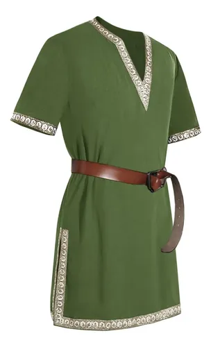
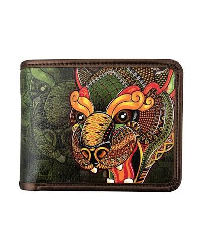
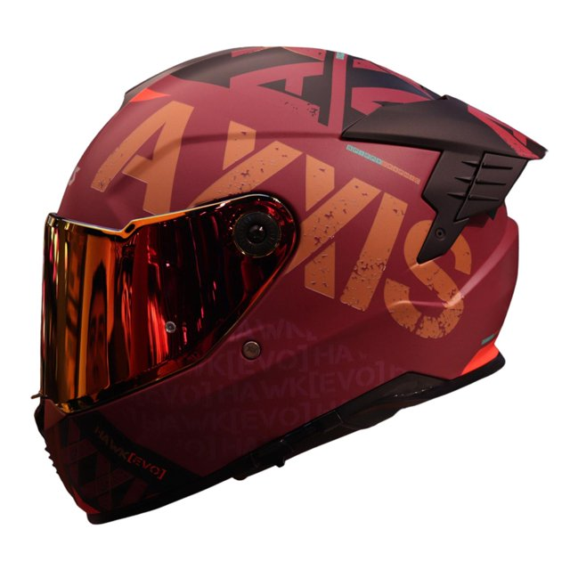
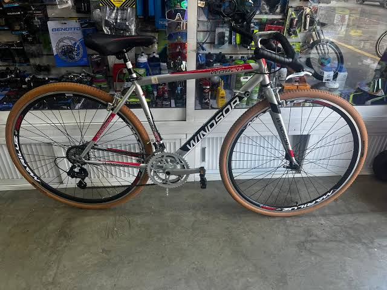

Buscar
✖ Perdido

Túnica verde
Atuendo de color verde, mangas cortas con cinturón color café de piel, perdido el 23 de noviembre de 2026, Yelizcalli, salón 003
❗ Encontrado

Cartera
Grabado artesanal de un jaguar, fondo verde bajo textiles otomíes, encontrado el 25 de octubre de 2026, en el Salón O213
✔ Recuperado

Casco de Motocicleta
Casco marca AXXIS, de color rojo, visor con degradado color anaranjado metálico, recuperado en el el Tlaltícpac salón 201
❗ Encontrado

Bicicleta
Bicicleta rodada 28 superturismo, color plateado, encontrado el 17 de noviembre de 2026 en Estacionamiento de Profesores